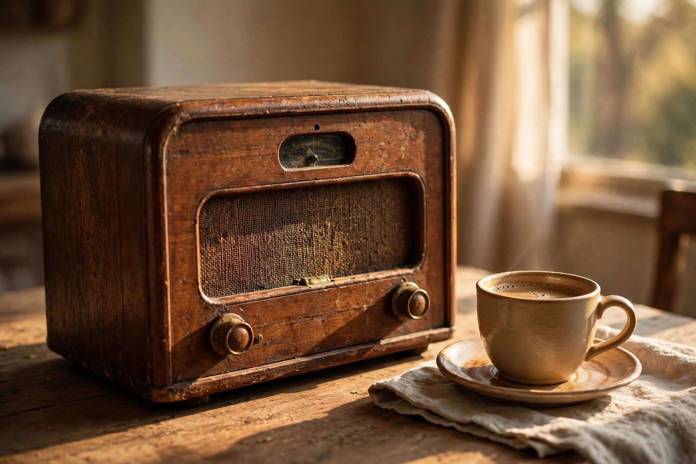
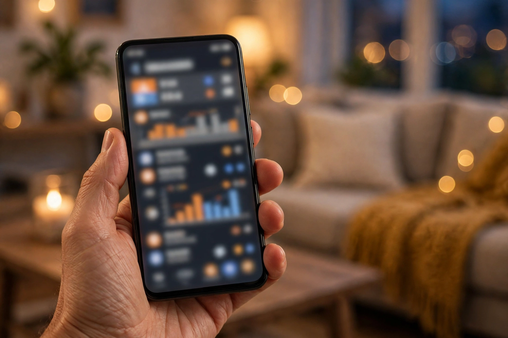

Start Free: The Schedule Costs Nothing
Before you spend a cent, get the schedule right. Checking what is on tonight is free and needs no account. That single habit saves more money than any subscription trick, because most wasted spending starts with guessing: a pass for a game that was on a channel you already had, or a fight that was a Fight Night and would have been included anyway.
Make a short list each week: the two or three games you care about, their start times in Eastern Time, and where they air. Most weeknight games start at 7 PM or 7.30 PM Eastern, football night games at 8 PM Eastern, and UFC main cards at 10 PM Eastern. If a game is not on your list, you do not need to pay for it. Highlights will do.
Radio Is Still the Cheapest Live Sport
Television gets all the attention, but radio is the oldest free way to follow a live game, and it still works. Local radio carries most NFL, NBA, MLB and NHL games, and national radio covers the big ones. You can listen while you drive, while you cook, or while you work, and it costs nothing beyond the radio you already own or the free app on your phone.

Radio also fixes the blackout problem. A game blocked on television in your area is usually still on the radio, and radio announcers describe everything in more detail than television ever needs.
Highlights and Score Apps Do Most of the Work
Here is an honest question: how many full games do you actually watch each week? For most fans the answer is one or two. The rest they follow through scores and highlights. A good score app gives you the score, the key plays, and the stats as they happen, and a highlights video gives you every goal and every turning point in about ten minutes.
That is free, and for a weeknight game you were only half watching anyway, it is often the better way. Save full live viewing for the games that matter: your team, a rivalry, a playoff game, or a title fight.
National TV Before a League Pass
The most expensive mistake is buying a league pass before checking what national television already gives you. The NFL puts its biggest games on CBS, Fox, NBC and ESPN, the NBA on ESPN, ABC and TNT, and the NHL on ESPN Plus and TNT. If you only watch the big games, those channels may already be enough.
A league pass earns its money in only one situation: you follow one team all season and it plays mostly out of market. NBA League Pass and MLB TV exist for exactly that fan, carrying nearly every out-of-market game. If that is you, one pass for one league is sensible. Two or three passes is where the bill starts to look silly.
The Pay-Per-View Traps to Avoid
UFC and boxing are where fans lose the most money, and the trap is always the same: paying for something that was included. Most UFC Fight Nights are included with ESPN Plus, but numbered events charge extra for the main card. Boxing works the same way on DAZN and ESPN Plus, with the biggest fights sold as pay-per-view on top of the subscription.
There is also the replay trap. A pay-per-view replay is often available the next day, and highlights of every big moment appear within hours. If it is not your favourite fighter in a title bout, the highlights will tell you everything you need to know, for free.
A Simple Monthly Budget That Works
- Keep what you already pay for. If your television package already includes ESPN, TNT, Fox and CBS, you already own the biggest games of the week.
- Add one pass at most, for the one league and the one team you follow every week. Cancel it when that season ends.
- Use free radio and score apps for everything else, and watch highlights instead of full games you were only half following.
- Buy pay-per-view only for title fights featuring a fighter you genuinely follow, and never on the night without checking whether it is a numbered event first.

That is the whole system. It will not get you every game live, and it does not promise to. It puts your money on the games you care about, and leaves the rest to the free tools that already exist.
Frequently Asked Questions
Can I follow my team for free?
Yes, in part. The schedule, radio commentary, score apps and highlights are all free. You will not see every game live, but you will never miss a result or a big moment.
When is a league pass actually worth it?
When you follow one team all season and it plays mostly out of market. NBA League Pass and MLB TV are built for that fan.
How do I avoid paying twice for a fight?
Check whether it is a numbered UFC event or a Fight Night before the weekend. Fight Nights are included with ESPN Plus, while numbered events charge extra for the main card. A quick check saves you a pay-per-view you did not need.